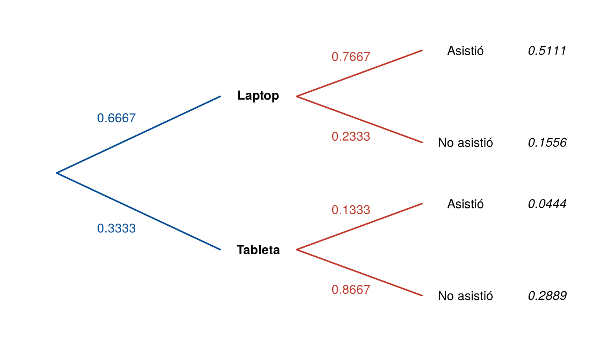

Muchas preguntas de probabilidad involucran dos características a la vez. ¿Qué proporción de los clientes compra y además es nuevo? ¿Qué tan probable es que un paciente tenga dengue si su prueba salió positiva? Para responderlas se usan tres tipos de probabilidad: marginal, conjunta y condicional.
Esta página los presenta con una tabla de contingencia y un diagrama de árbol, y termina con la regla de la multiplicación. Los bloques de código se ejecutan en orden.
Una tabla de contingencia cruza dos características y muestra cuántas veces aparece cada combinación. Es la forma más sencilla de organizar la información para calcular probabilidades.
En un evento tecnológico se encuestó a 900 personas. Se registró si preferían laptop o tableta y si asistieron a la conferencia principal sobre inteligencia artificial. Se definen los eventos:
En R, la tabla se construye con
matrix(). El argumento dimnames les pone
nombre a las filas y a las columnas, y addmargins() agrega
los totales:
encuesta <- matrix(c(460, 40,
140, 260),
nrow = 2, byrow = TRUE,
dimnames = list(Conferencia = c("Asistió", "No asistió"),
Dispositivo = c("Laptop", "Tableta")))
addmargins(encuesta) Dispositivo
Conferencia Laptop Tableta Sum
Asistió 460 40 500
No asistió 140 260 400
Sum 600 300 900Si se divide cada celda por el total, 900, se obtiene la tabla en
términos de probabilidades. La función prop.table() hace
esa división:
round(addmargins(prop.table(encuesta)), 4) Dispositivo
Conferencia Laptop Tableta Sum
Asistió 0.5111 0.0444 0.5556
No asistió 0.1556 0.2889 0.4444
Sum 0.6667 0.3333 1.0000| Tipo | Qué mide | Dónde está en la tabla | Ejemplo |
|---|---|---|---|
| Marginal | La probabilidad de un solo evento, sin tener en cuenta el otro | En los totales (márgenes) | \(P(A) = 600/900 = 0.6667\) |
| Conjunta | La probabilidad de que ocurran dos eventos a la vez | En las celdas internas | \(P(A \cap B) = 460/900 = 0.5111\) |
Las dos se relacionan: cada probabilidad marginal es la suma de las conjuntas de su fila o columna. Por ejemplo,
\[ P(A) = P(A \cap B) + P(A \cap B^c) = 0.5111 + 0.1556 = 0.6667 \]
y las cuatro probabilidades conjuntas suman 1.
p <- prop.table(encuesta)
p["Asistió", "Laptop"] + p["No asistió", "Laptop"] # P(A)[1] 0.6666667sum(p) # suma de las conjuntas[1] 1A veces se sabe que un evento ya ocurrió y se quiere la probabilidad de otro. La probabilidad condicional de \(B\) dado \(A\) es
\[ P(B \mid A) = \frac{P(A \cap B)}{P(A)}, \qquad P(A) > 0 \]
y se lee “probabilidad de \(B\) dado \(A\)” o “probabilidad de que ocurra \(B\) si se sabe que ocurrió \(A\)”.
Saber que ocurrió \(A\) reduce el espacio muestral: ya no se consideran las 900 personas, sino solo las 600 que prefieren laptop. Dentro de ese grupo, 460 asistieron a la conferencia:
\[ P(B \mid A) = \frac{460/900}{600/900} = \frac{460}{600} = 0.7667 \]
Del mismo modo, entre las 300 personas que prefieren tableta, 260 no asistieron: \(P(B^c \mid A^c) = 260/300 = 0.8667\).
En R, prop.table(encuesta, margin = 2)
divide cada celda por el total de su columna, así que
da las probabilidades condicionales dado el dispositivo:
round(prop.table(encuesta, margin = 2), 4) Dispositivo
Conferencia Laptop Tableta
Asistió 0.7667 0.1333
No asistió 0.2333 0.8667Cada columna suma 1: entre quienes prefieren laptop, el 76.67 % asistió y el 23.33 % no.
\(P(B \mid A)\) es la proporción de
asistentes entre quienes prefieren laptop: 0.7667.
\(P(A \mid B)\) es la proporción de
personas con laptop entre quienes asistieron: \(460/500 = 0.92\). Son preguntas distintas y
dan números distintos. Con margin = 1,
prop.table() divide por el total de cada
fila y da \(P(A \mid
B)\):
round(prop.table(encuesta, margin = 1), 4) Dispositivo
Conferencia Laptop Tableta
Asistió 0.92 0.08
No asistió 0.35 0.65Un diagrama de árbol muestra los eventos por etapas. Las primeras ramas tienen las probabilidades marginales del primer evento y las segundas, las probabilidades condicionales del segundo evento. Al final de cada camino se multiplica lo que hay en sus ramas y se obtiene una probabilidad conjunta.
par(mar = c(0.5, 0.5, 0.5, 0.5))
plot(0, 0, type = "n", xlim = c(0, 10), ylim = c(0, 10), axes = FALSE, xlab = "", ylab = "")
# primeras ramas: dispositivo
segments(0.5, 5, 3.5, c(7.5, 2.5), col = "#034A94", lwd = 2)
text(c(1.6, 1.6), c(6.8, 3.2), c("0.6667", "0.3333"), col = "#034A94")
text(c(4.2, 4.2), c(7.5, 2.5), c("Laptop", "Tableta"), font = 2)
# segundas ramas: conferencia, dado el dispositivo
segments(4.9, rep(c(7.5, 2.5), each = 2), 7.2, c(9, 6, 4, 1), col = "#C0392B", lwd = 2)
text(5.9, c(8.8, 6.2, 3.8, 1.2), c("0.7667", "0.2333", "0.1333", "0.8667"), col = "#C0392B")
text(8, c(9, 6, 4, 1), c("Asistió", "No asistió", "Asistió", "No asistió"))
# probabilidades conjuntas
text(9.5, c(9, 6, 4, 1), c("0.5111", "0.1556", "0.0444", "0.2889"), font = 3)
Diagrama de árbol de la encuesta. Al final de cada camino está la probabilidad conjunta.
Las probabilidades que salen de un mismo punto suman 1: \(0.7667 + 0.2333 = 1\). Por ejemplo, el camino de arriba da \(P(A \cap B) = 0.6667 \times 0.7667 = 0.5111\), el mismo valor de la tabla.
Al despejar la intersección en la fórmula de la probabilidad condicional se obtiene la regla de la multiplicación:
\[ P(A \cap B) = P(A)\,P(B \mid A) = P(B)\,P(A \mid B) \]
Es lo que se hace al recorrer un camino del árbol. Sirve para experimentos por etapas. Por ejemplo, un lote tiene 20 unidades, de las cuales 3 son defectuosas, y se sacan 2 sin reemplazo. La probabilidad de que la primera sea defectuosa es \(3/20\). Si la primera fue defectuosa, quedan 2 defectuosas entre 19, así que la probabilidad de que la segunda también lo sea es \(2/19\). Entonces
\[ P(\text{las dos defectuosas}) = \frac{3}{20} \times \frac{2}{19} = 0.0158 \]
(3 / 20) * (2 / 19)[1] 0.01578947Se puede comprobar con simulación. La función sample()
sin reemplazo saca 2 unidades del lote:
set.seed(2026)
lote <- c(rep("defectuosa", 3), rep("buena", 17))
dos_defectuosas <- replicate(20000, all(sample(lote, size = 2) == "defectuosa"))
mean(dos_defectuosas)[1] 0.0147| Problema | Causa | Solución |
|---|---|---|
| Una probabilidad condicional da igual a la conjunta | Se dividió por el total general | Dividir por el total del evento que se sabe que ocurrió |
| Se confunde \(P(A \mid B)\) con \(P(B \mid A)\) | Se leyó mal la condición | Identificar qué se sabe (lo que va después de la barra) |
prop.table() da condicionales en la
dirección equivocada |
Se usó margin = 1 en lugar de
margin = 2, o al revés |
margin = 1 divide por filas y
margin = 2 por columnas |
| Las ramas de un árbol no suman 1 | Falta una rama o una probabilidad está mal | Revisar que cada punto tenga todos sus resultados |
| En extracciones sin reemplazo se usa la misma probabilidad en cada etapa | Se olvidó que el lote cambia | Actualizar el número de unidades en cada etapa |
Con la tabla de la encuesta, calcule: (a) la probabilidad de que una persona prefiera tableta y haya asistido; (b) la probabilidad de que haya asistido, si prefiere tableta; (c) la probabilidad de que prefiera tableta, si asistió. Diga qué tipo de probabilidad es cada una.
Conjunta: \(P(A^c \cap B) = 40/900 = 0.0444\).
Condicional: \(P(B \mid A^c) = 40/300 = 0.1333\).
Condicional: \(P(A^c \mid B) = 40/500 = 0.08\).
encuesta["Asistió", "Tableta"] / sum(encuesta)[1] 0.04444444encuesta["Asistió", "Tableta"] / sum(encuesta[, "Tableta"])[1] 0.1333333encuesta["Asistió", "Tableta"] / sum(encuesta["Asistió", ])[1] 0.08La tabla Titanic, que viene con R,
tiene el número de pasajeros y tripulantes según clase, sexo, edad y
supervivencia. Con apply(Titanic, c(2, 4), sum) se obtiene
la tabla de sexo por supervivencia. Calcule la probabilidad de
sobrevivir para hombres y para mujeres. ¿Qué proporción de los
sobrevivientes eran mujeres?
sexo_superv <- apply(Titanic, c(2, 4), sum)
sexo_superv Survived
Sex No Yes
Male 1364 367
Female 126 344round(prop.table(sexo_superv, margin = 1), 3) # P(supervivencia | sexo) Survived
Sex No Yes
Male 0.788 0.212
Female 0.268 0.732round(prop.table(sexo_superv, margin = 2), 3) # P(sexo | supervivencia) Survived
Sex No Yes
Male 0.915 0.516
Female 0.085 0.484Sobrevivió el 21.2 % de los hombres y el 73.2 % de las mujeres. Entre los sobrevivientes, el 48.4 % eran mujeres. Las dos últimas cifras responden preguntas distintas: \(P(\text{sobrevivir} \mid \text{mujer})\) y \(P(\text{mujer} \mid \text{sobrevivir})\).
Del lote de 20 unidades con 3 defectuosas se sacan 2 sin reemplazo. ¿Cuál es la probabilidad de que la primera sea buena y la segunda defectuosa?
\(P = \dfrac{17}{20} \times \dfrac{3}{19} = 0.1342\). Después de sacar una buena quedan 19 unidades, y las 3 defectuosas siguen en el lote.
(17 / 20) * (3 / 19)[1] 0.1342105El 70 % de los estudiantes de un curso estudia para el examen. De quienes estudian, aprueba el 90 %; de quienes no estudian, aprueba el 40 %. Construya el diagrama de árbol y calcule la probabilidad de que un estudiante estudie y apruebe, y la de que no estudie y apruebe.
Las primeras ramas son Estudia (0.7) y No estudia (0.3). De Estudia salen Aprueba (0.9) y Reprueba (0.1); de No estudia, Aprueba (0.4) y Reprueba (0.6).
0.7 * 0.9 # estudia y aprueba[1] 0.630.3 * 0.4 # no estudia y aprueba[1] 0.12Si se suman los dos caminos que terminan en Aprueba, \(0.63 + 0.12 = 0.75\), se obtiene la probabilidad de aprobar. Esa suma es la ley de probabilidad total, que se presenta en Teorema de Bayes.
matrix(),
addmargins(), prop.table() y de la tabla
Titanic.Última revisión: 7 de noviembre de 2026.